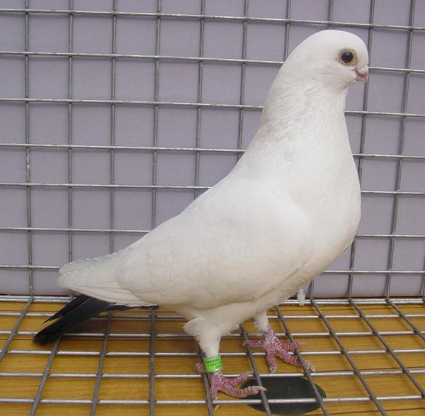

Güvercin soylarından çok geniş kapsamlı bir türdür. Bu tür diğer güvercin türlerine göre daha ufak olmasıyla bilinir.Soyu, 8.yüzyılda Afrika'dan gelmektedir.
Vücudu ve renkleri bir harmoni oluşturarak mükemmel uyumlu bir görüntü oluşturur.Kafa büyük, vücut orantısına ve büyüklüğüne göre kısa kalın bir gaga yapısı vardır. Ağız geniş ve gaga toplu iğne başı görüntüsündedir. Gözler patlak, göz çerçevesi beyazdır. Göğsünde gül bulunur.Ayaklar çıplak ve kısadır. Bango ismi, Galeba ismi verilen martılara benzediği için verilmiştir. Almanya'da KRAUSENTAUBEN İngiltere'de CORTBECKS olarak isimlendirilmişlerdir.
RENKLER:
Kırmızı, siyah, mavi, sarı renkleri vardır. Vücutları beyaz, kanat ve kuyrukları renklidir.
UÇUŞ ÖZELLİKLERİ:
Bangolar uçuş özelliğinden çok, güzellikleri için beslenirler. Düz uçumlu olup, yüksek uçar ve kümesinden pırıltı verildiğinde hızla aşağıya dalarlar.
Bu özelliğinden ötürü özellikle dönek besleyen kişiler, döneklerinin daha randımanlı dönebilmesi için mutlaka bir bango ile birlikte uçururlar. Bangolar yaklaşık, 1- 1,5 SAAT uçarlar. Kendi kümesinden kuş gösterildiğinde hemen dalışa geçer ama kesinlikle bir başkasının kümesine bu refleksi göstermez.
Kolay kolay yakalanmazlar. Döneklerse tam tersine, aşağıdan verilen her pırıltıya reflekslidirler.Bangoları genelde ılıman iklimi olan bölgelerde beslemek daha doğrudur. soğuk bölgelerde hem sağlıklı üreyememekte, hemde sağlık problemleri ile sık sık karşılaşılmaktadır. Türkiye'de özellikle İstanbul ve İzmir'de beslenmekte olup, eskiden bir çok ilde beslenmekteydi.Aynı nesil Bulgaristan'da da beslenmekte olup, KABAK ismi ile tanımlandırılmaktadırlar.
Avrupa'da ise en çok Berlin'de beslenmekte olup, orada da BERLİN BANGOSU olarak adlandırılmıştır.
Bu Bangolar genelde mavi kanat olup, üzerinde siyah şeritler bulunmaktadır.
BESLENMESİ:
Bangolar uçmayan kuşlara ait besin reçetesi ile beslenmelidirler.
Aşağıda bu reçete belirtilmiştir.
Bezelye 30% Fiğ 10% Soyulmuş arpa 20% Küçük mısır 6% Süpürge tohumu 4% Buğday 10% Darı 20% Bangoların vücutları küçük olduğundan, günde 25 gr. yem beslenmeleri için yeterli olmaktadır.
Dönek, kelebek, taklacı, posta gibi orta büyüklükteki güvercinler ise, 30-35 gr., Bağdat ve göğüs şişiren kuşlarsa 50-55 gr. yem ile beslenebilirler.